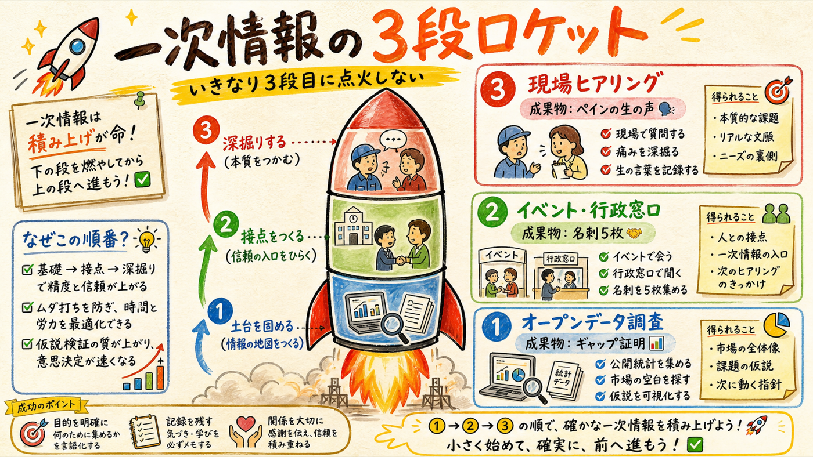
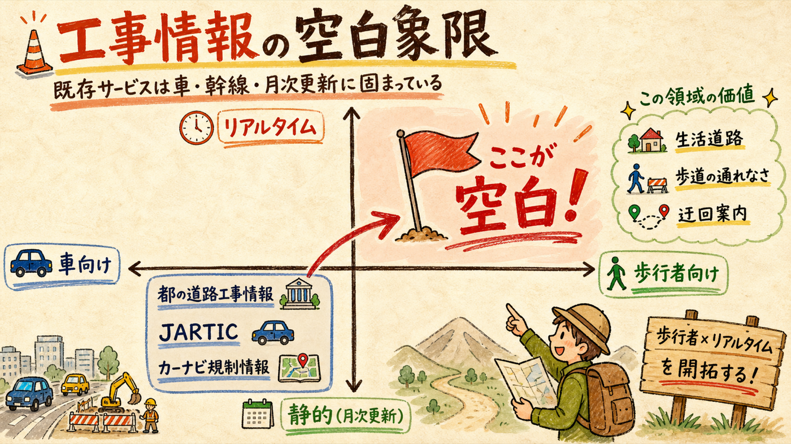
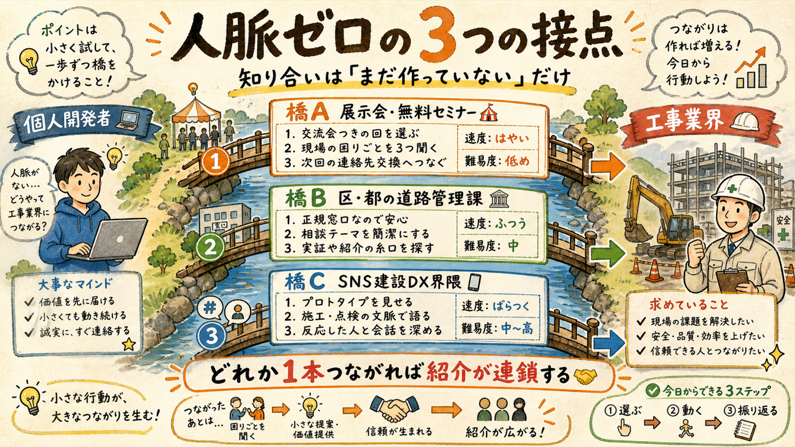
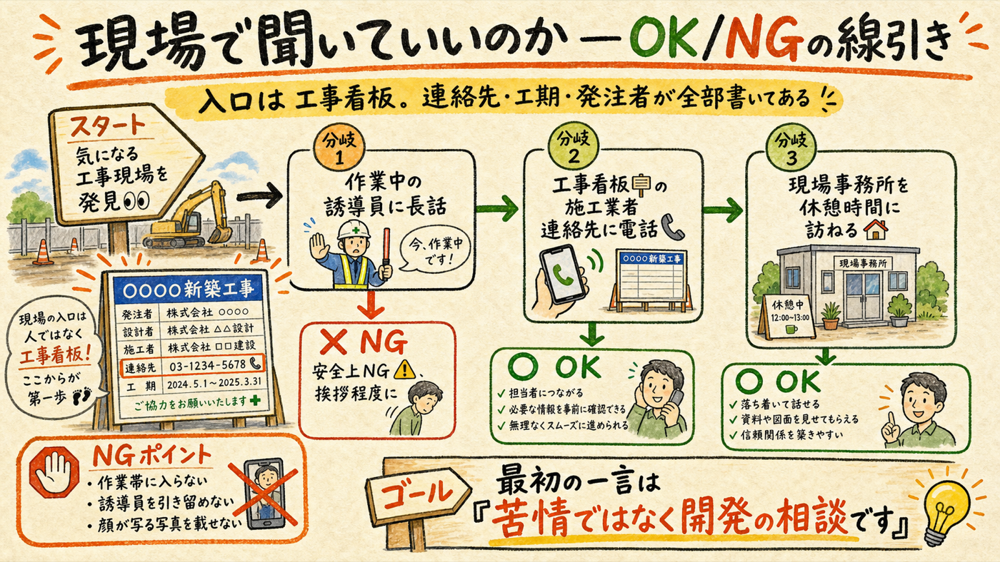
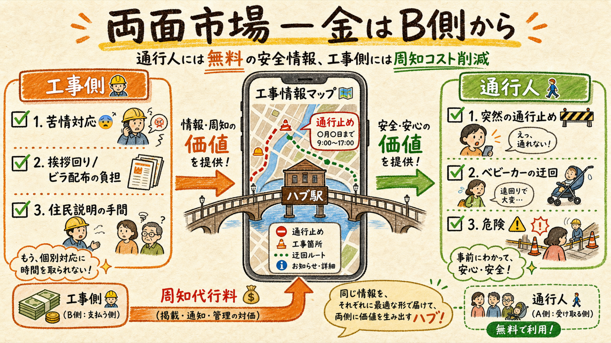

工事の人に話を聞きに行くという直感は正しい。ただし知り合いゼロで現場に突撃するのは打率が低い。オープンデータでギャップを証明し、合法的な接点を3系統つくってから現場に行く順番に組み替えると、費用ほぼゼロ・3ヶ月で一次情報が手に入る。
突撃は3段目。1段目はデスクでできる

「実際に工事をしている人に話を聞きに行く」は事業構築の王道で、やるべき。ただし知り合いゼロの状態で現場に行っても、作業中の相手は立ち話に応じられないし、こちらも何を聞くべきかまだ言語化できていない。先にオープンデータを掘って「いま公開されている工事情報はここまで粗い」というギャップを証明すると、それ自体が最初の成果物になり、ヒアリングでの質問リストにもなる。
おさんぽセーフティは最強の名刺。「都知事杯ハッカソンでこのアプリを作った開発者です。工事情報をもっと役立つ形で載せたい」と言えた瞬間、あなたは『不審な個人』から『取材に来た開発者』に変わる。だからこそ、まず7/27の提出（login→deploy→提出の残り3手）を完了させることが戦略上も最優先。
歩行者 × 生活道路 × リアルタイムは誰も埋めていない

| データ源 | 対象 | 更新頻度 | 歩行者目線 |
|---|---|---|---|
| 東京都建設局 道路工事情報 | 都道のみ（区部約30路線＋多摩約10路線） | 2〜3ヶ月ごと | ✕ |
| JARTIC 交通規制オープンデータ | 車向け規制（幹線中心） | 月次・過去データは消える | ✕ |
| xROAD / 道路施設点検DB | インフラ点検データ（工事予定ではない） | — | ✕ |
| 歩行者向け詳細工事マップ | 生活道路・歩道・迂回案内 | リアルタイム | ◎ ← 空白 |
つまり「マップに詳細な工事情報が出る未来」は、既存データを繋ぐだけでは作れない。生活道路レベル・日次以上の鮮度・歩行者への影響（歩道が塞がる、迂回距離、ベビーカー通行可否）という粒度は、現場からの入力がないと成立しない。だからこそ一次情報＝現場との関係構築が参入障壁になる。先に泥臭い収集の仕組みを作った者を、後発は簡単に真似できない。
※ 出典: 東京都建設局 道路工事情報 (kensetsu.metro.tokyo.lg.jp)、JARTIC オープンデータ (jartic.or.jp)。いずれも2026-07-10取得。
知り合いは「いない」のではなく「まだ作っていない」だけ

目標は「名刺5枚」ではなく「継続的に質問できる人を2人」。イベントで会った人に後日『15分だけオンラインで現場の話を聞かせてください』と頼むところまでが1セット。
突撃ではなく、看板の連絡先から入る

実は日本の道路工事には、連絡先の公開が仕組みとして組み込まれている。現場に必ず立っている工事看板には、施工業者名・電話番号・工期・発注者（自治体名）が明記されている。これが公式のコンタクトポイントで、電話して「近隣住民向けの工事情報アプリを作っている開発者です。困りごとを15分だけ聞かせてほしい」と言うのは全く正当な行為。業界側も『見られている』ことをイメージアップに使いたいと発信しており、苦情ではない丁寧な関心は歓迎されやすい。
NG集: 作業帯（コーンの内側）に入らない。作業中の交通誘導員を長時間引き留めない（安全に直結する仕事中）。撮影は公道から、作業員の顔が特定される写真をSNSに載せない。最初の一言で「苦情ではなく、開発の相談」と伝える。
通行人から金は取れない。工事側のコストを減らせ

現場代理人の実負担として文献に明記されているのが、騒音・振動苦情への対応と、事前の住民説明・挨拶回り・書面配布（土木学会事例）。つまり工事側には『近隣にちゃんと知らせる』こと自体に人件費がかかっている。ここに「マップに載せれば周知が済む」という価値を提示できれば、工事側が自らデータを入力する動機が生まれる — データ収集コストの問題と収益源の問題が同時に解ける [仮説]。
5条件フィルターで見ると: 能力発揮◯（マップ×AIの実装力）・ストック型◯（現場との関係とデータが蓄積）・高収入の可能性△→◯（B側課金が成立すれば）・時間の主導権◯・嫌な人間関係を増やさない◯。4/5前後で「前向き」判定。ただし高収入の可能性はヒアリングで工事側の支払い意思を確認するまで未確定。
7/27の提出が0日目
| 期間 | やること | 成果物 |
|---|---|---|
| 〜7/27（最優先） | おさんぽセーフティの残作業: login→deploy→提出 | ハッカソン提出完了＝名刺の完成 |
| 8月前半 | 都・JARTIC・区のオープンデータを実際に取り込み、粒度ギャップをおさんぽセーフティ上で可視化 | 「公開データではここまでしか分からない」デモ |
| 8月後半 | 橋を3本架ける: 無料セミナー1本申込・区の道路管理課に問い合わせ・X建設DX界隈に実物投稿 | 継続的に質問できる人 2人 |
| 9月 | 工事看板ルートで現場ヒアリング5件（聞くことリスト持参） | 工事側ペインの生の声・支払い意思の有無 |
| 10月 | 工事側向け無料β: 「あなたの現場をマップに載せて周知を代行」を1現場で試す | 両面市場仮説の検証結果 |
確度の整理: 粒度ギャップの存在は確認済み（確度高）。歩行者向け専業競合の不在は確度70%。工事側がお金を払うかは未検証 — だからこそヒアリングに行く価値がある。